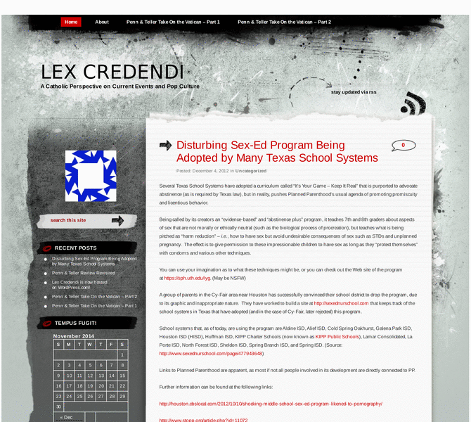

Previewing: Lex Credendi Previewing: Lex Credendi 
Use the left/right red arrow controls to navigate through this ring - Click the preview image to visit the member site.

The views of an unlikely convert to the Holy Catholic Church on all things related to the Mystical Body of Christ.
Lex Credendi owned by:
 confiteor_deo confiteor_deo
A member of the original webring since 04/02/2011.
|
|